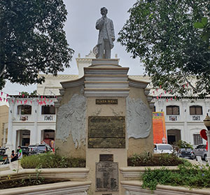
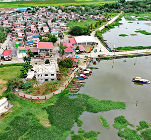
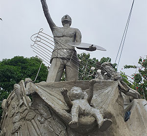

HISTORY

Angono's heritage of painting and in music is impressive. Evident in so many ways, Angono's creativity are beautifully expressed. Creative ideas, pieces and artworks of Angono's local artists and town folks can be seen and heard; either on art galleries or rehearsal studios, during festive celebrations and in colorful traditions, or even on things we use in our daily lives. Angono's two national artists - Carlos "Botong" V. Francisco on visual arts and Maestro Lucio D. San Pedro on music who both gained national prominence, still serve as source of inspiration to established and budding artists. The town also offers things that are worth visiting, trying and seeing - it's historical and cultural landmarks, resorts, native cuisines, parks and relief sculptures, its performing artists and its remarkable festivities and celebrations. Angono is the home of the Higantes Festival, a pageantry of gigantic works of art as manifestation of the artist's creativity and artistry, a symbolism of our people's achievement and the town's high status in terms of peace and order, cleanliness, good governance, among others.
Angono continuously moving towards the realization of our vision. Angono to date is a GALING POOK AWARDEE (for outstanding local government innovation), Cleanest and Greenest Municipality in Rizal Province (consistent top winner since 2001 for Gawad Pangulo sa Kapaligiran and forYnares Eco-System Program) and Hall of Famer in the Provincial and Regional Search for Outstanding Municipal Peace and Order Council. Human development is now part of the main focus in order to bring out the best and outstanding qualities in every civil servants of Angono - hardworking, diligent, effective, just and morally upright. All set programs must be sustained. Angono need the people's total and active participation and involvement so that the dream of Angono will be fully realized.
As we always say, let us keep moving towards the realization of the ANGONO DREAM: "An Artists' Paradise... A Tourists' Haven" - a healthy, peaceful and orderly community, a just and humane society with blessings from God Almighty.
GEOGRAPHY

Province: Rizal
Total Land Area: 1,282.35 hectares
Location: Angono lies 29.38 km. east of Manila. It is situated on the southwestern portion of the province of Rizal.
How to get here: Land routes from Metro Manila, via Ortigas Avenue and Manila East Road, via Angono-Taytay Coastal Raod and Manila East Road, or via Marcos Hi-way, Ortigas Ave. Extension and Manila East Road.
Transport Availability: FX commuter vehicles and jeepneys stationed at EDSA Central and SM Megamall (Mandaluyong City) or at Cubao Shopping Center (Quezon City).
Geographical Boundaries: Taytay on the northwest; Antipolo on the north; Teresa on the northeast; Binangonan on the southeast; Laguna de Bay on the southwest.
Topography: The land is actually dominated by the alluvial river valley of terrain of Angono which varies from gently to moderately sloping areas with slope categories ranging from 0 to more that 50%.
Soil Type: Clay soils are dominant.
BARANGAYS

BARANGAY is the smallest political unit in the Philippines. It functions as ultimate planner and implementator of the national government’s policies, plans, programs, projects and activities in the community. It serves as a forum wherein the collective opinion of the people may be expressed, crystallized and considered. People disputes are likewise settled amicably in the barangay.
- Bagumbayan (2,831)
- Kalayaan (9,765)
- Poblacion Ibaba (2,098)
- Poblacion Itaas (807)
- San Isidro (19,487)
- San Pedro (2,097)
- San Roque (8,734)
- San Vicente (10,388)
- Sto. Niño (2,815)
- Mahabang Parang (15,646)
San Isidro, Mahabang Parang and San Roque are the three (3) largest barangays, comprising of 91% of the town's total land area.